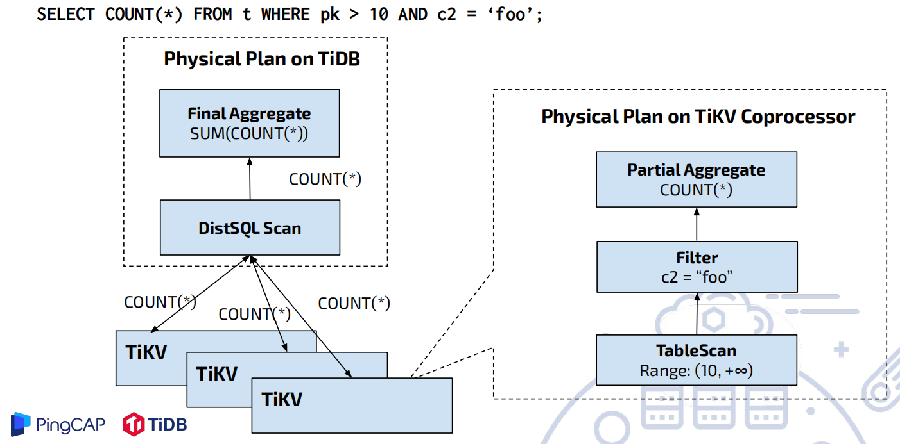
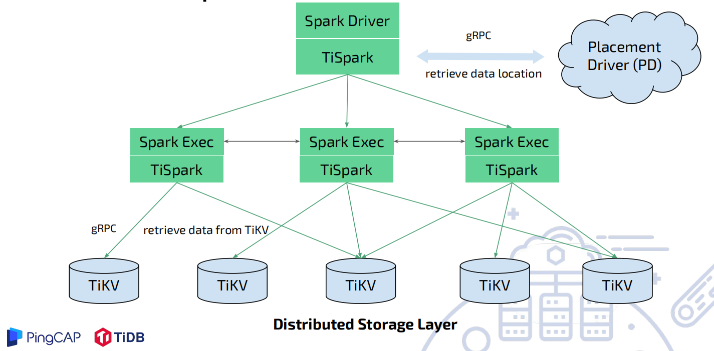
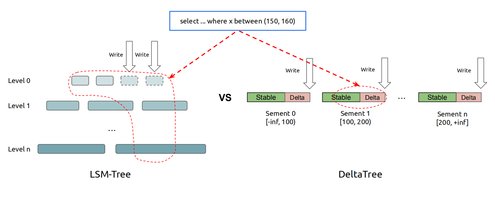
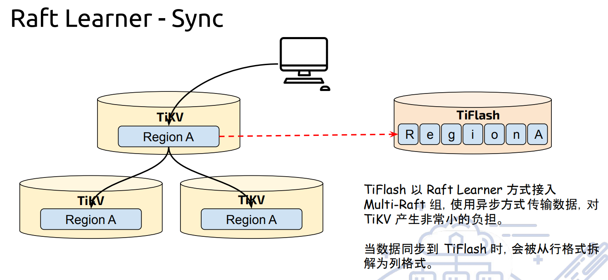
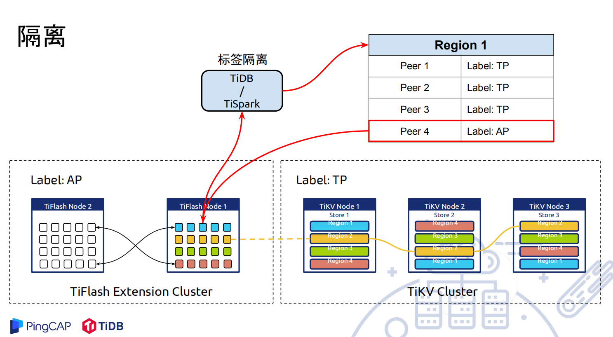
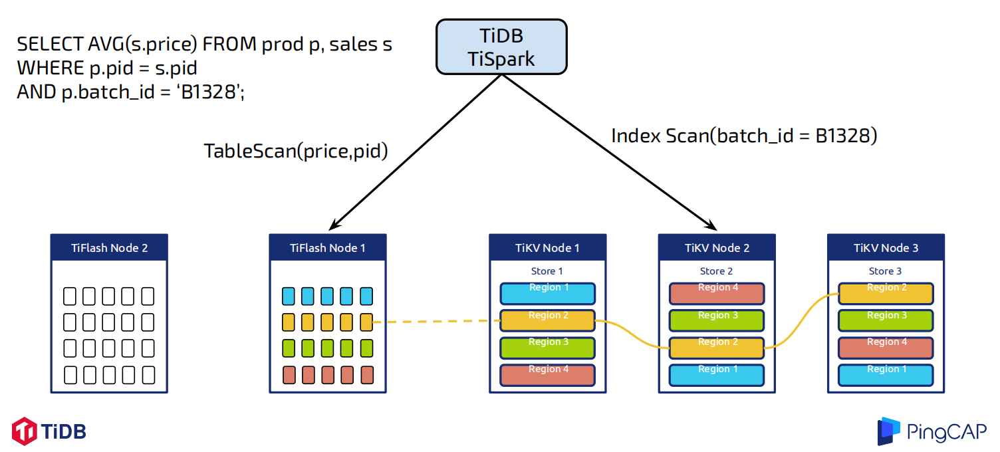
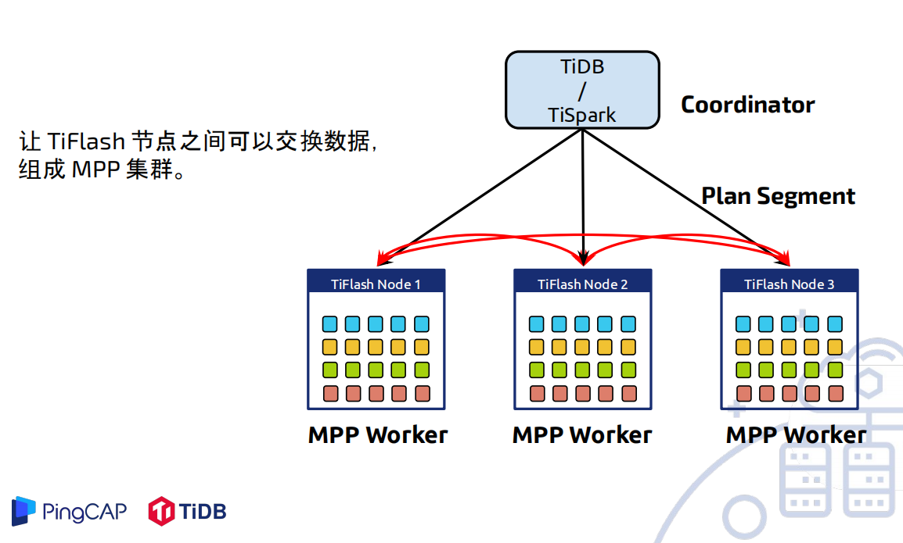
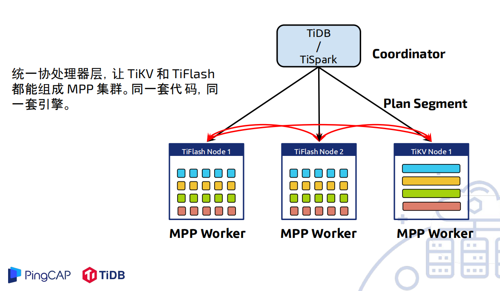

TiDB HTAP 的特点
前面已经介绍过，宏观上的 TiDB 最初的设计受到 Google 内部开发的知名分布式数据库 Spanner 和 F1 的启发， 作为当今开源 NewSQL 数据库领域的代表产品之一，相比传统的单机数据库，TiDB 有以下的一些优势：
- 纯分布式架构，拥有良好的扩展性，支持弹性的扩缩容
- 支持 SQL，对外暴露 MySQL 的网络协议，并兼容大多数 MySQL 的语法，大多数场景下是可以直接替换 MySQL
- 默认支持高可用，在部分节点失效的情况下，数据库本身自动进行数据修复和故障转移，对业务透明
- 支持 ACID 事务，对于一些有强一致需求的场景友好，例如：银行转账
- 有丰富的工具链生态，覆盖数据迁移，同步，备份等场景
作为一款优秀的 HTAP 数据数据库，在已知的优秀的的 OLTP 性能之外，下面会重点介绍 TiDB 在 OLAP 方面的进化之路。
- 基于TiDB+TiKV的OLAP能力
借助于优化器及 coprocessor提供的强大的下推运算能力，TiDB可以满足大部分OLAP场景。

但依然存在如下不足：
- TiDB 之间无法直接交换数据
- TiKV 之间也无法在计算过程中交换数据
- 海量存储（TiKV），半单机计算（TiDB）
- Coprocessor 无法处理需要数据交换的算子
- 基于TiSpark+TiKV的OLAP能力
解决上述问题的一个方法就是，引入TiSpark来扩充TiDB的算力。

spark作为一款优秀稳定的分布式计算平台，有如下优势：
- 无痛衔接大数据生态圈
- 支持脚本，JDBC，Python，R，Apache Zeppelin等方式操作
- 支持更大数据量的计算
但是spark也有如下缺点：
- 只能提供低并发的粗暴计算
- 运维复杂
- 基于TiDB/TiSpark+TiFlash+TiKV的OLAP能力
在只有TiKV作为行存存储的情况下，有如下两个核心矛盾无法解决：
- 行存对于分析场景不友好
- 无法做到 Workload 隔离
为了解决上述两个核心矛盾，列存储方案必须应运而生，TiFlash有如下优势：
- 与 TiKV 不同的存储设计，更高效的批量读取性能
- 分析场景特化的存储结构设计，更低的读取消耗
- 配合源于 ClickHouse 的极致向量化计算引擎，更少的废指令，SIMD 加速
使用delta作为存储，来提供更加快速的查询响应

TiFlash通过Raft Learner，来更快的获取一致的最新数据
- 实时，且自动容错 + 负载均衡的数据复制
- 实时到账且对 TP 压力非常小
- TiFlash 节点稳定性无关 TiKV
- AP 查询对 TP 性能影响非常小
- 自带负载均衡，可多对多高效复制
- 复制协议本身自带容错和数据恢复
- 更快速的数据获取可以让业务决策更有效
- 更快的物流周转，更精确的风控，更敏捷的商业策略调整

通过Label进行节点的物理隔离，松绑计算引擎并发能力
- TiSpark 曾经是个麻烦
- 火力全开，调高并发 → TiKV 集群抖动乃至业务投诉
- 佛系读取，降低并发 → 集群稳定，但查询㏿度极慢
- 为 TiSpark 特别设计了降低读取效率的参数，何其脑裂精分
- TiDB 直接查询在线数据也有类似问题
- 为实时查询增加索引 → 避免大范围扫描㐀成抖动
- 但却影响 TP 业务写入㏿度
- 不增加索引 → 不但统计极慢，且一旦做些统计业务延迟大增
- 为实时查询增加索引 → 避免大范围扫描㐀成抖动

行列配合，而不只是行存
- 统一平台满足高并发短查询混合中低并发实时分析和跑批，报表等业务
- 甚至同一查询可同时使用行列进行加速达到最大效果
- 例如物流数据平台
- 大量高并发低延迟点查追踪包裹或者客户信息
- 同时进行亚秒级的多维分析，例如分省统计某种货物的发单率
- 由于数据实时到账且一致，两种用法数据完全不会打架
- 同一套平台，无需切换

更快的业务接入速度
- 亲身经历：某游戏接入 Hadoop 平台进行分析
- 3 天时间架设数据从分布式数据库传输变更日志的管道
- 2 天时间编写将日志入库 Hive 的作业
- 由于传输管道本身无法保证一致性，作业本身需要去重，且分区入 库需要校对时间边界
- 还需要编写数据校对代码，以保证及时发现传输错误，又过去几天
- TiFlash 让用户更早接入服务
- 快到仅仅需要一条命令开启同步：ALTER TABLE orders SET TIFLASH REPLICA 2;
那么HTAP的进化历程是否已经到头了呢，答案当然是不会，进化会随着环境变化动态进行，TiDB当然也是。未来，主要会在以下几个方面进行相应的加强：
- TiSpark 作为唯一分布式计算引擎
- 缺少中规模快速查询的解决方案
- 略重的模型（MR 模型）- 需要 MPP 引擎
- 写入需要通过 TiKV
- 大批量写入速度吞吐不够
- 副本必须先以行存方式写入再同步为列存
